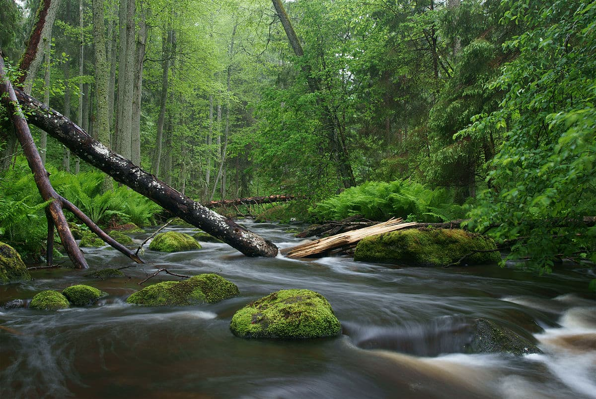
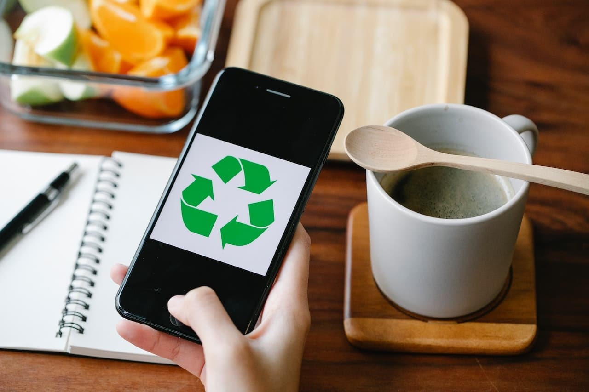

Ochrona Środowiska


Tutaj znajdziesz informacje i porady, jak dbać o naszą planetę.
Śledź najnowsze wiadomości i wydarzenia dotyczące ochrony środowiska.
Praktyczne porady, które pomogą Ci w codziennym dbaniu o środowisko.
